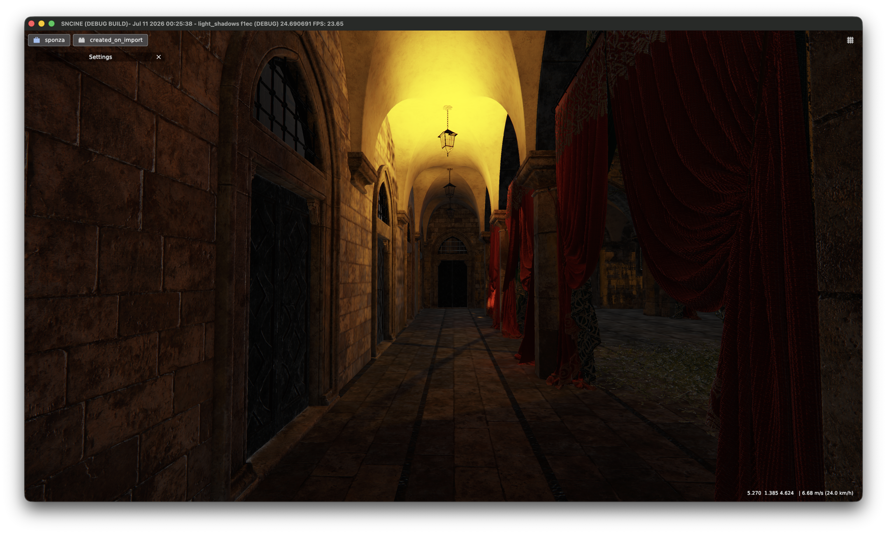
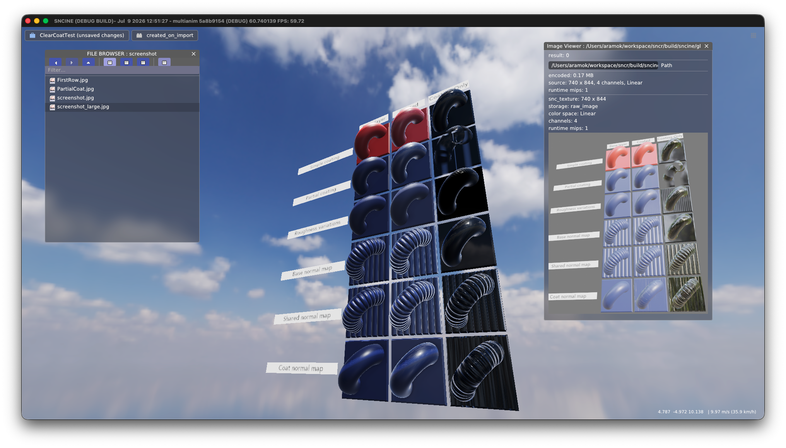
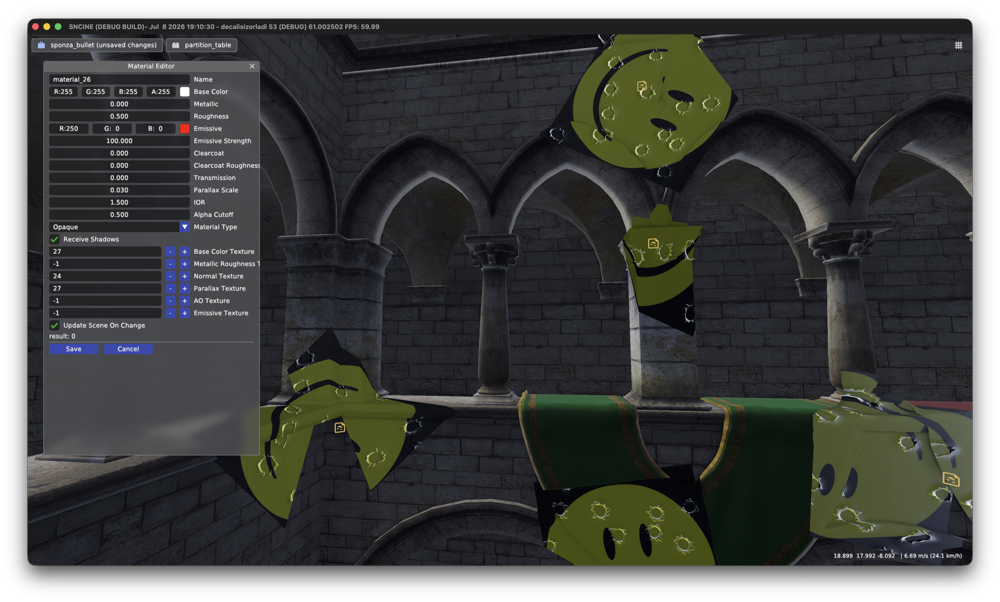
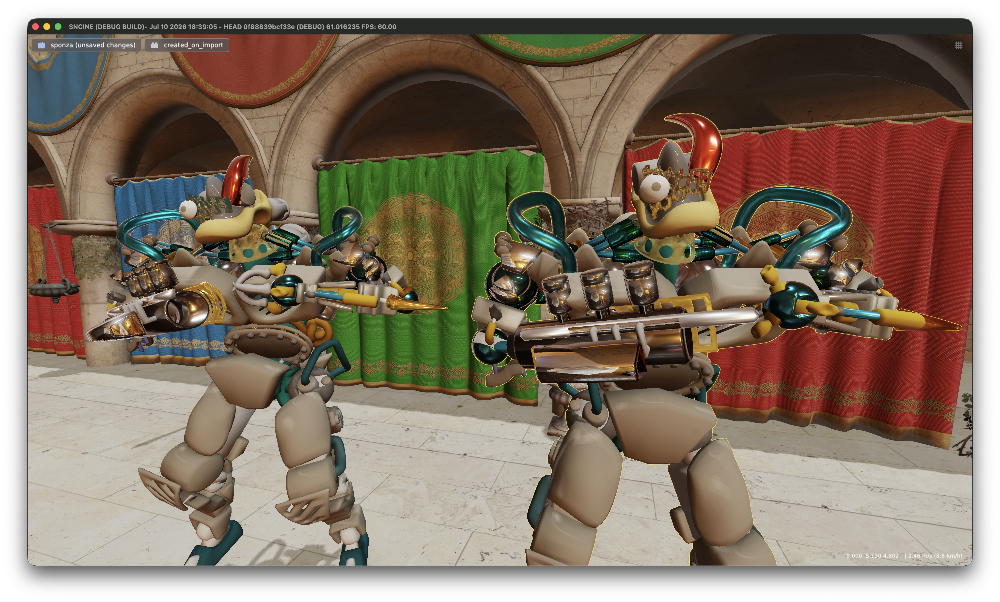
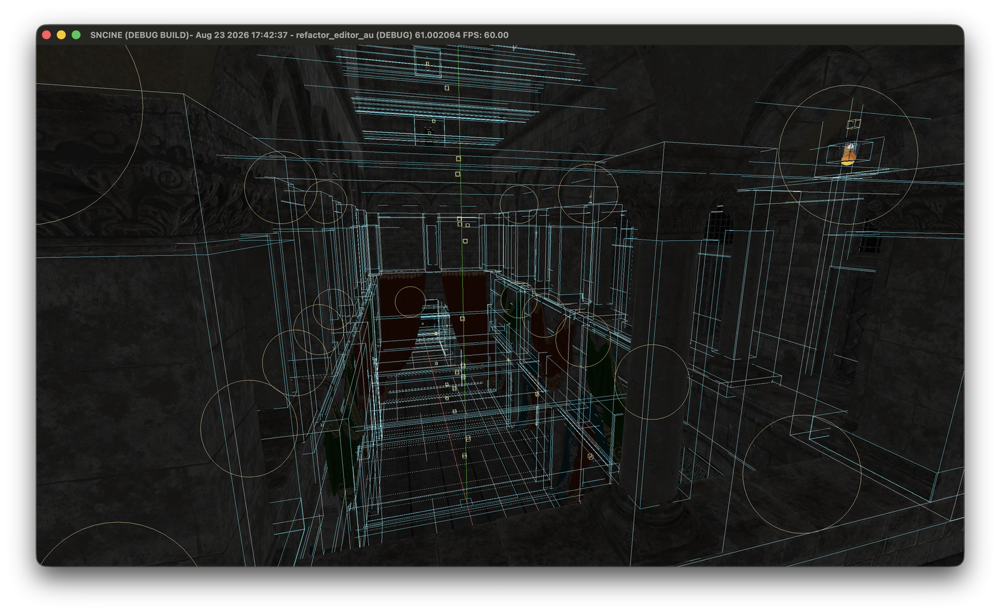

SNCINE aims to power high quality content across multiple platforms while keeping visual fidelity, optimization, and runtime performance at the highest possible level.
SNC Library, the SNCINE core engine, and the editor work together as a layered system. Every layer is designed around portability, predictable data flow, and efficient execution.
CORE, TOOLS & SCRIPTING
C at the core. C++ for the tools. Lua for scripting.
The core engine is written in C, the integrated editor and tools are written in C++, and Lua provides the scripting layer. All three work directly with SNC Library and the runtime.
GRAPHICS API
Vulkan across different platforms.
Separate graphics pipelines and compatibility paths allow SNCINE to adapt its Vulkan backend to different devices.
MEMORY
Sparse by design.
Vulkan memory operations are managed through perforated sparse data structures called snc_sparse_list.
PRIORITY
Performance comes first.
Optimization, code execution speed, and stable behavior across a wide range of platforms remain primary development goals.
02 / RENDERING
LIGHT, DEPTH, AND MATERIAL.
A modern forward+ pipeline built for dense scenes, dynamic lights, rich materials, and predictable GPU work.

Dynamic local lightingForward+ · PBR · HDR
PIPELINE
GPU based visibility
Indirect rendering, compute culling, sparse GPU lists, Reverse Z depth, and HZB occlusion culling.
LIGHTING
Scalable illumination
Forward+ clusters, cascaded and local shadows, HDR IBL, and baked light probes.
MATERIALS
Layered surfaces
PBR, clearcoat, decals, multiple textures, BC formats, mipmaps, and alpha testing.
EFFECTS
Finished frames
Weighted blended OIT, SSAO, bloom, particles, billboards, and tone mapping.

Clearcoat materialsIndependent coat normals

Runtime decalsMaterial-driven detail
03 / ENGINE SYSTEMS
STREAMING EVERYTHING. THE SMART WAY.
Resources, scene partitions, textures, and GPU transfers move through systems designed to load only what the engine needs.
01
Asset streaming
Reference counted cache, lazy access, partitioned scenes, and asynchronous CPU and GPU transfers.
02
Animation
Skeletal rendering, individual playback states, animation selection, and editor controls.
03
Scene & physics
Grid partitioning, physics, input, object picking, and Lua scripting.
04
SNCPAK
Custom packages for glTF/GLB import, texture compression, export, and runtime delivery.

INDIVIDUAL ANIMATION STATES
04 / EDITOR
TOOLS BUILT BESIDE THE ENGINE.
The ImGui editor keeps scene authoring, package operations, debugging, and profiling close to the runtime.

Scene diagnosticsLights, bounds, and object overlays